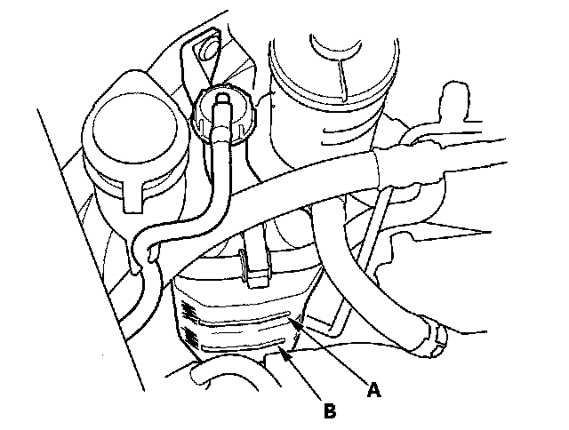

Coolant: Testing and Inspection
Coolant Check1. Look at the coolant level in the coolant reservoir. Make sure it is between the MAX mark (A) and MIN mark (B).

2. If the coolant level in the coolant reservoir is at or below the MIN mark, add coolant to bring it between the MIN and MAX marks, then inspect the cooling system for leaks.